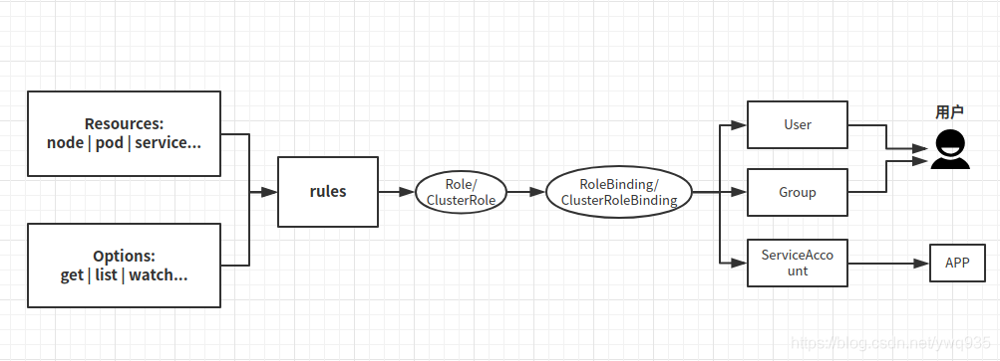
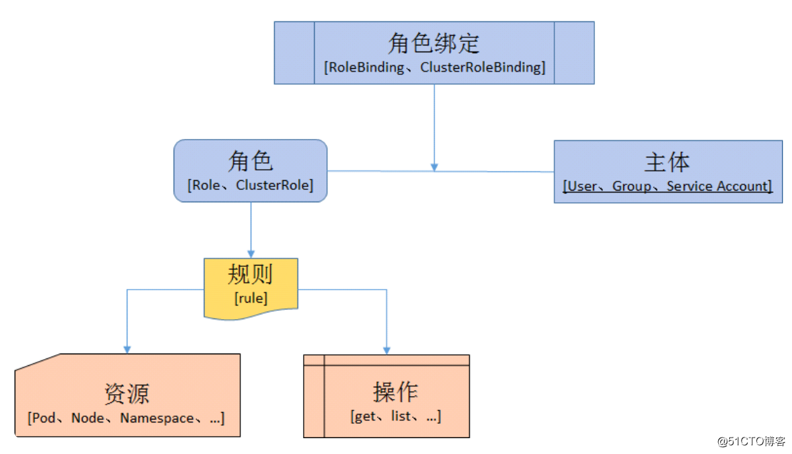

kubernetus权限管理akcess
本文最后更新于：2023年8月4日 早上
akcess是一个命令行实用程序，可用于与其他团队共享对 Kubernetes 集群的细粒度访问。
安装 wget https://github.com/viveksinghggits/akcess/releases/download/v0.0.4/akcess_0.0.4_Linux_x86_64.tar.gz
解压配置
tar xf akcess_0.0.1_Linux_x86_64.tar.gz -C /usr/local/bin
参数解释
1 | |
- 将上述命令的输出重定向到一个文件，该文件可以在KUBECONFIGenv var 中设置。
1
2
3
4
5
6
7
8
9
10
11
12
13
14
15akcess allow --verb get --resource pods,pods/log -n test > logsconfig(生成config文件)
每当我们创建一个Kubernetes资源时，我们都会用一个keyallow.akcess.id和value对其进行注释，使其成为UUID
已经创建的资源集合或者akcess allow已经运行的次数可以通过运行算出
akcess list
- id: ee022ab3-246f-4a6d-bd53-e04ae90cc1d9
createdAt: 2022-03-06T12:03:42.171995731+01:00
namespace: test
- id: 818e4e6f-4be9-41a2-9f8b-de4247626d16
createdAt: 2022-03-06T12:12:17.884823402+01:00
namespace: default
要删除Kubernetes特定运行的资源，我们可以运行
» akcess delete --id ee022ab3-246f-4a6d-bd53-e04ae90cc1d9 - 参数补充：
1
2
3
4
5
6
7
8
9
10
11
12
13
14
15
16
17
18
19
20
21
22
23
24
25
26
27
28
29
30
31
32
33
34
35
36
37
38
39
40
41
42
43
44
45
46
47
48
49
50
51
52
53
54
55
56
57
58
59
60
61
62
63
64
65
66
67
68
69
70
71
72
73
74
75
76
77
78
79
80
81
82
83
84
85
86
87
88
89
90
91
92
93
94
95
96
97
98
99
100
101
102
103
104
105
106
107
108
109
110
111
112
113
114
115
116
117
118
119
120
121
122
123
124
125
126
127
128
129
130
131
132
133
134
135
136
137
138
139
140
141
142
143
144resources:
- "configmaps"
- "endpoints"
- "persistentvolumeclaims"
- "pods"
- "pods/log"
- "pods/portforward"
- "podtemplates"
- "replicationcontrollers"
- "resourcequotas"
- "secrets"
- "services"
- "events"
- "daemonsets"
- "deployments"
- "replicasets"
- "ingresses"
- "networkpolicies"
- "poddisruptionbudgets"
verbs: ["get", "list", "watch", "create", "update", "patch", "delete"]
以下三种：
---
apiVersion: rbac.authorization.k8s.io/v1
kind: ClusterRole
metadata:
name: template-namespaced-resources___operation
rules:
- apiGroups:
- "*"
resources:
- "*"
verbs:
- "*"
---
apiVersion: rbac.authorization.k8s.io/v1
kind: ClusterRole
metadata:
name: template-namespaced-resources___developer
rules:
- apiGroups:
- "*"
resources:
- "configmaps"
- "endpoints"
- "persistentvolumeclaims"
- "pods"
- "pods/log"
- "pods/portforward"
- "podtemplates"
- "replicationcontrollers"
- "resourcequotas"
- "services"
- "events"
- "daemonsets"
- "deployments"
- "replicasets"
- "ingresses"
- "networkpolicies"
- "poddisruptionbudgets"
verbs:
- "*"
---
apiVersion: rbac.authorization.k8s.io/v1
kind: ClusterRole
metadata:
name: template-cluster-resources___read-only
rules:
- apiGroups:
- "*"
resources:
- "componentstatuses"
- "namespaces"
- "nodes"
- "persistentvolumes"
- "mutatingwebhookconfigurations"
- "validatingwebhookconfigurations"
- "customresourcedefinitions"
- "apiservices"
- "tokenreviews"
- "selfsubjectaccessreviews"
- "selfsubjectrulesreviews"
- "subjectaccessreviews"
- "certificatesigningrequests"
- "runtimeclasses"
- "podsecuritypolicies"
- "clusterrolebindings"
- "clusterroles"
- "priorityclasses"
- "csidrivers"
- "csinodes"
- "storageclasses"
- "volumeattachment"
verbs: ["get", "list", "watch", "delete"]
---
apiVersion: rbac.authorization.k8s.io/v1
kind: ClusterRole
metadata:
name: template-cluster-resources___admin
rules:
- apiGroups:
- "*"
resources:
- "componentstatuses"
- "namespaces"
- "nodes"
- "persistentvolumes"
- "mutatingwebhookconfigurations"
- "validatingwebhookconfigurations"
- "customresourcedefinitions"
- "apiservices"
- "tokenreviews"
- "selfsubjectaccessreviews"
- "selfsubjectrulesreviews"
- "subjectaccessreviews"
- "certificatesigningrequests"
- "runtimeclasses"
- "podsecuritypolicies"
- "clusterrolebindings"
- "clusterroles"
- "priorityclasses"
- "csidrivers"
- "csinodes"
- "storageclasses"
- "volumeattachment"
verbs: ["*"]
apiVersion: rbac.authorization.k8s.io/v1
kind: ClusterRole
metadata:
name: template-namespaced-resources___test
rules:
- apiGroups:
- "*"
resources:
- "pods"
- "pods/log"
- "pods/portforward"
- "podtemplates"
- "deployments"
verbs:
- "*"用户分类
K8s的用户分两种，一种是普通用户，一种是ServiceAccount（服务账户）。
普通用户
普通用户是假定被外部或独立服务管理的。管理员分配私钥。平时常用的kubectl命令都是普通用户执行的。
如果是用户需求权限，则将Role与User(或Group)绑定(这需要创建User/Group)，是给用户使用的。
ServiceAccount（服务账户）
ServiceAccount（服务帐户）是由Kubernetes API管理的用户。它们绑定到特定的命名空间，并由API服务器自动创建或通过API调用手动创建。服务帐户与存储为Secrets的一组证书相关联，这些凭据被挂载到pod中，以便集群进程与Kubernetes API通信。（登录dashboard时我们使用的就是ServiceAccount）
如果是程序需求权限，将Role与ServiceAccount指定(这需要创建ServiceAccount并且在deployment中指定ServiceAccount)，是给程序使用的。
相当于Role是一个类，用作权限申明，User/Group/ServiceAccount将成为类的实例。
工作流程图

K8s角色&角色绑定（以ServiceAccount展开讲解）
授权介绍
在RABC API中，通过如下的步骤进行授权：
定义角色：在定义角色时会指定此角色对于资源的访问控制的规则。
绑定角色：将主体与角色进行绑定，对用户进行访问授权。
角色
Role：授权特定命名空间的访问权限
ClusterRole：授权所有命名空间的访问权限
角色绑定
RoleBinding：将角色绑定到主体（即subject）
ClusterRoleBinding：将集群角色绑定到主体
主体（subject）
User：用户
Group：用户组
ServiceAccount：服务账号
